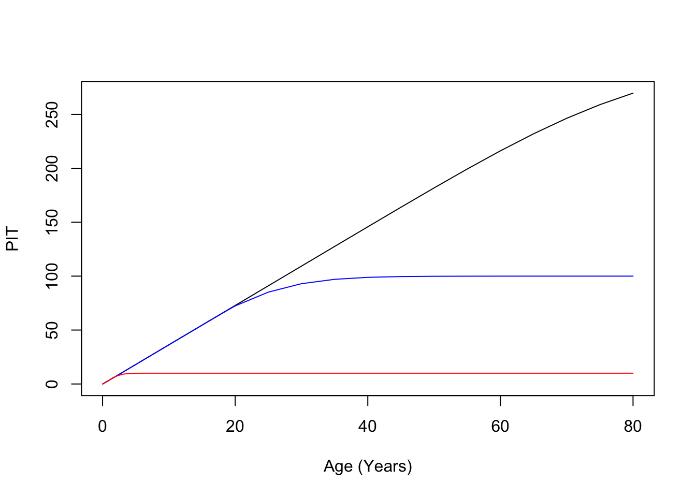
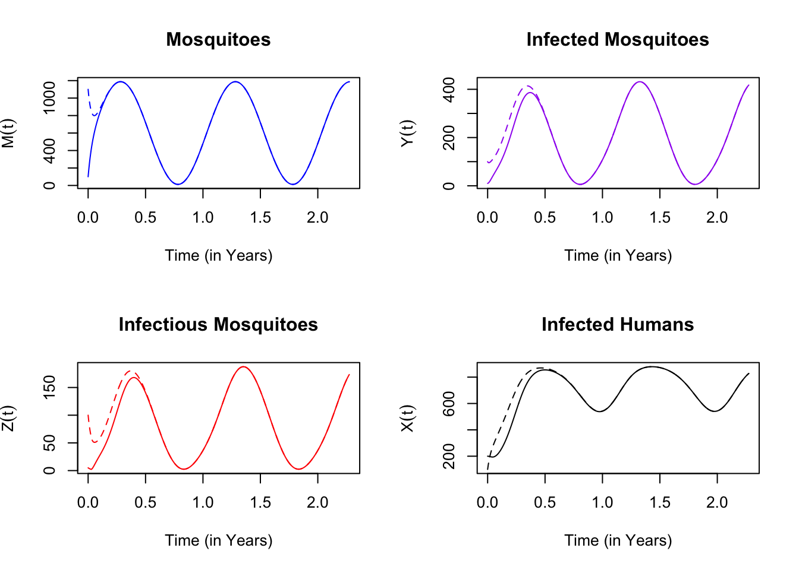
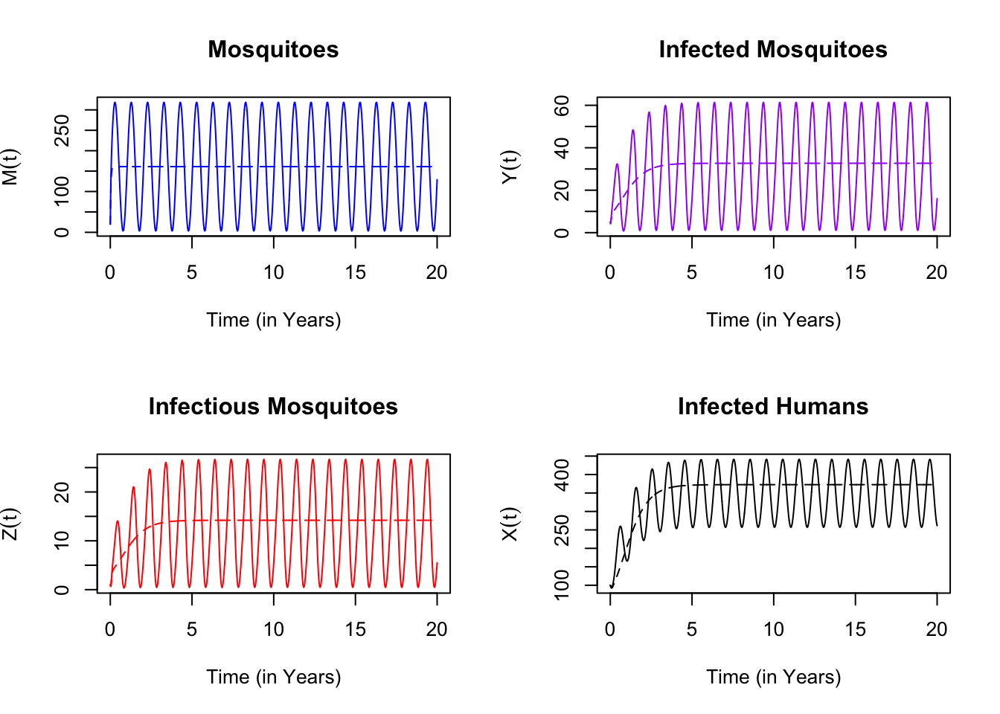

6.1 Population Immune Tracking: Exposure Tracking
In a population stratified by age, cumulative exposure will vary by age. Let \(I_{a,t}\) denote an immune tracking variable that tracks exposure for people of age \(a\) at time \(t\). It is updated by the following recursive relationship:
\[\begin{equation} I_{a,t+1} = \alpha_t + (1-\mu) I_{a,t} \end{equation}\]
Note that for \(\mu=0\), the equation simply tracks cumulative exposure. This version returns only the last value:
basePIT.0 = function(alpha, mu=0, vecV = matrix(0,1,1), calO=matrix(1,1,1), N=1, w=1){
###################################################################
# If alpha is a vector (a time series), then N is its length.
# If alpha is a scalar, then N is passed as an optional argument.
# Default values update one time step for alpha and mu.
###################################################################
if(length(alpha)==1){
alpha = rep(alpha, N)
} else {
N = length(alpha)
}
####################################
# alpha is the "attack" rate
# mu describes the "decay"
# w describes biting weights by age
# calO is an age operator
####################################
for(t in 1:N){
vecV = ((1-mu)*vecV + w*alpha[t])%*%calO
}
return(vecV)
}This version returns the whole time series (including the initial value):
basePIT.TS = function(alpha, mu=0, vecV = matrix(0,1,1), calO=matrix(1,1,1), N=1, w=1){
###################################################################
# If alpha is a vector (a time series), then N is its length.
# If alpha is a scalar, then N is passed as an optional argument.
# Default values update one time step for alpha and mu.
###################################################################
if(length(alpha)==1){
alpha = rep(alpha, N)
} else {
N = length(alpha)
}
####################################
# alpha is the "attack" rate
# mu describes the "decay"
# w describes biting weights by age
# calO is an age operator
####################################
matV = vecV
for(t in 1:N){
vecV = ((1-mu)*vecV + w*alpha[t])%*%calO
matV = cbind(matV, vecV)
}
return(matV)
}We write a function plotPITxAge that plots PIT variables by age.
plotPITxAge = function(ages, vecV, lines=FALSE, clr=NULL, d2y=F){
clr <- ifelse(is.null(clr),"black", clr)
if(d2y == TRUE) ages <- ages/365
if(lines==FALSE){
plot(ages, vecV, type = "l", xlab = "Age (Years)", ylab = "PIT", col = clr)
} else {
lines(ages, vecV, col = clr)
}
}We use the age operator, \({\cal O\)} and the 1066 age structure (from the AgeOperators.R in the the Operational-Model-Library). The following plots cumulative exposure by age. The age structure here tracks populations for 85 years. Black shows 85 years of exposure. Blue shows the results for 10,000 days ($\(27.4 years) and red for 1,000 days (\)$2.7 years). Starting from no exposure, we see the relationship saturate. This is a cautionary tale to take care to set the initial conditions for tracking variables \(V_0\) with great care.
source ("./Operational-Model-Library/AgeOperators.R")
calO = calO_1066()
ages = ages_1066()
vecV = matrix(0,1,66)
plotPITxAge(ages, basePIT.0(0.1, mu=0, vecV, calO, N=3000))
plotPITxAge(ages, basePIT.0(0.1, mu=0, vecV, calO, N=1000), T, "blue")
plotPITxAge(ages, basePIT.0(0.1, mu=0, vecV, calO, N=100), T,"red")
We plot another function, plotPITxTime that plots PIT variables over time.
plotPITxTime = function(tm, vecV, lines=FALSE, clr=NULL, d2y=F){
clr <- ifelse(is.null(clr),"black", clr)
if(d2y == TRUE) tm <- tm/365
if(lines==FALSE){
plot(tm, vecV, type = "l", xlab = "Time (Years)", ylab = "PIT", col = clr)
} else {
lines(tm, vecV, col = clr)
}
}The following shows how the PIT variables behave with respect to time. Exposure is plotted in red. Other colors track exposure with decay:
vecV0 = 0
plotPITxTime(ttTT, basePIT.TS(alphaT, mu=0.05, vecV0)->V05)
plotPITxTime(ttTT, basePIT.TS(alphaT, mu=0.1, vecV0)->V10, T, "blue")
plotPITxTime(ttTT, basePIT.TS(alphaT, mu=0.2, vecV0)->V20, T,"darkred")
plotPITxTime(ttTT, basePIT.TS(alphaT, mu=0.3, vecV0)->V30, T,"darkgreen")
plotPITxTime(ttTT, basePIT.TS(alphaT, mu=0.5, vecV0)->V50, T,"purple")
lines(ttTT[-401], alphaT, col = "red")
This shows how the tracking variables work for constant exposure:
vecV0 = 0
plotPITxTime(ttTT, basePIT.TS(stepT, mu=0.05, vecV0)->V05)
plotPITxTime(ttTT, basePIT.TS(stepT, mu=0.1, vecV0)->V10, T, "blue")
plotPITxTime(ttTT, basePIT.TS(stepT, mu=0.2, vecV0)->V20, T,"darkred")
plotPITxTime(ttTT, basePIT.TS(stepT, mu=0.3, vecV0)->V30, T,"darkgreen")
plotPITxTime(ttTT, basePIT.TS(stepT, mu=0.5, vecV0)->V50, T,"purple")Isolating the decay:
ix = 200:300
tix = c(ix-200)/36.5
plot(tix, V05[ix]/max(V05), type = "l", xlab = "Time (Years)", ylab = "Relative to Max")
lines(tix,V10[ix]/max(V10), col = "blue")
lines(tix,V20[ix]/max(V20), col = "darkred")
lines(tix,V30[ix]/max(V30), col = "green")
lines(tix,V50[ix]/max(V50), col = "purple")